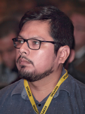

Dra. Claudia Bauzer Medeiros
Claudia Bauzer Medeiros es profesora a tiempo completo de Bases de Datos en el Instituto de Computación
de la Universidad de Campinas (Unicamp), Brasil y miembro de la Academia Brasileña de Ciencias. Ella ha
recibido reconocimientos en Brasil y a nivel internacional en investigación, enseñanza y también por su
trabajo en el fomento de la participación de las mujeres en actividades relacionadas con las tecnologías
de la información.
Su investigación se centra en el diseño y desarrollo de bases de datos científicas. Su principal interés
radica en afrontar los retos que plantean las grandes aplicaciones del mundo real, que requieren el
manejo de fuentes de datos distribuidas y muy heterogéneas.
Es Comendadora de la Orden Brasileña del Mérito Científico, Dra. Honoris Causa de la Universidad Antenor
Orrego, Perú, y de la Universidad Paris-Dauphine, Francia. Es miembro en general del Consejo de la ACM,
miembro del Consejo de la Research Data Alliance (RDA) y del World Data System (WDS).
Tema de la conferencia: Compartiendo datos de Covid-19 – Open Science y el Repositorio FAPESP
COVID-19 Data Sharing/BR.
Dr. Francisco Tirado

Francisco Tirado es Catedrático de Arquitectura y Tecnología de Computadores en la Universidad
Complutense de Madrid. Ha trabajado en diferentes campos dentro de la Arquitectura de Computadores,
Procesamiento Paralelo y Automatización del Diseño. Sus áreas de investigación actuales son algoritmos y
arquitecturas paralelas, diseño de procesadores. El profesor Tirado ha sido coautor de más de 300
publicaciones.
Ha participado en la organización de más de 100 conferencias internacionales como presidente general,
miembro del comité
directivo, presidente del programa, miembro del comité del programa, orador invitado y presidente de la
sesión. Ha sido
director del CSC (Centro de Supercomputación) y del Parque Científico de Madrid. El Prof. Tirado es
Catedrático de la
Sociedad Española de Informática Científica (SCIE), Doctor “honoris causa” por la Universidad Nacional
de Asunción,
Universidad Nacional de San Agustín, Universidad Nacional de La Plata y Universidad de Almería. El Prof.
Tirado es
miembro senior de IEEE, miembro de la Sección de Computación de la Academia Europea y ha recibido el
Premio Nacional de
Informática de España 2013.
Tema de la conferencia: Evolución de las arquitecturas para HPC y BIG DATA
Dr. Raimundo Macêdo

Raimundo Macêdo es profesor titular en el Departamento de Ciencias de la Computación y jefe del
Laboratorio de Sistemas Distribuidos (LaSiD) de la Universidad Federal de Bahía (UFBA) en Brasil. Tiene
un Ph.D. en Ciencias de la Computación de la Universidad de Newcastle upon Tyne (Inglaterra).
Es el actual presidente de la Sociedad Brasileña de Computación (SBC) y consejero de la IFIP. Fue
miembro del Comité Directivo de CLEI de 2011 a 2016.
El Prof. Macêdo ha participado y coordinado varios proyectos de investigación con diferentes
instituciones de investigación brasileñas e internacionales, cubriendo muchos aspectos de los sistemas
distribuidos confiables (algoritmos, arquitecturas e implementaciones), y formó parte del comité de
programa de numerosas conferencias sobre el área de sistemas confiables, incluyendo IEEE / IFIP DSN,
IEEE SRDS, LADC (Simposio Latinoamericano de Computación Dependiente), EDCC (Conferencia Europea de
Computación Dependiente), entre otros. Actualmente es miembro del comité directivo de SRDS (Simposio
Internacional sobre Sistemas Distribuidos Confiables). Sus intereses de investigación incluyen sistemas
distribuidos confiables autogestionables y sistemas ciberfísicos.
Tema de la conferencia: Tolerancia a fallos en sistemas distribuidos dinámicos.
Dr. Raimundo Macêdo

Miguel Paredes Quiñones es miembro del personal de investigación del grupo de optimización y simulación
de recursos naturales de IBM Research, ubicado en São Paulo, Brasil. Obtuvo su doctorado en ingeniería
eléctrica en la Universidad de Campinas y su maestría en Ingeniería Eléctrica en la Universidad Estadual
de São Paulo. Actualmente investiga técnicas de optimización para simulación de sistemas físicos
mediante IA.
Es embajador cuántico en IBM. Sus principales intereses son: Programación de enteros mixtos no lineales,
Optimización convexa,Técnicas de relajación (optimización), Algoritmos de optimización cuántica.
Tema de la conferencia: “Quantum Computing” – La computación cuántica en la resolución eficiente
de problemas..
Dr. Raimundo Macêdo
Roberth Minga Vallejo es Cloud Marketing Lead en Microsoft Latam Región Sur. Encargado de la estrategia
de marketing para soluciones en la nube en organizaciones de Ecuador, Perú, Bolivia, Paraguay y Uruguay.
Cuenta más de 20 años de
experiencia en organizaciones de tecnología y comercialización de soluciones de software. Ha participado
en proyectos
de desarrollo bancario, así como en la definición de las estrategias de marketing y comercialización de
soluciones como Azure de Microsoft y
ha montado empresas que usan el modelo de plataforma. Su formación es Ingeniería en Sistemas, cuenta con
una Maestría en
Administración de empresas y una certificación en Transformación Digital del MIT.
Tema de la conferencia: “Platform Revolution – La evolución de las plataformas”. Cómo las
plataformas están transformando las economías..